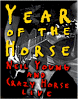
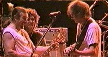
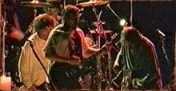
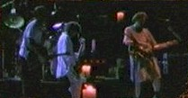
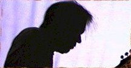

Contents | Features | Reviews | News | Archives | Store |
 |
|
| Movie Credits | Buy It! |
Year of the Horse
Review by Lyall Bush
Posted 29 October 1997
|  | Directed by Jim Jarmusch Starring
Neil Young, |
"Crank it up," Jim Jarmusch scrawls in parentheses under the titles to his scratchy new documentary about Crazy Horse, the four-man combo that’s played together for a generation under the leadership of rock’n’roll’s Sasquatch Shelley, Neil Young. "Made loud to be played loud," reads the next line, like a declaration of independent filmmaking. It’s great to see it in a concert film about Neil Young but especially because it feels like after a decade of making interesting, arty movies hefty with irony (Night on Earth, Dead Man) Jarmusch may finally be going for it. Credit his deadpan asides in Smoke or his acquaintance with Young directing Dead Man a year ago, but Year of the Horse looks like the work of a man who’s just found his voice.
Maybe that’s why he spends so much of the early part of the film quizzing the band on their sound. You hear him behind the camera button-holing Billy Talbot, the bassist, Ralph Molina, the drummer, Frank "Poncho" Sampedro, the guitar player, and Neil Young himself about the origin of the Crazy Horse sound. Hunched down, in turn, on a small, scrape-y chair in the laundry room of an apartment building the guys blink, mug-shot style, into the camera. They introduce themselves ("Name’s Neil Young and I play guitar") and assay answers to Jarmusch’s questions. "Um, can you tells us about your sound?" "Um, where did you find your sound?" That, to say the least, doesn’t get him very far. It’s not until the band’s manager gets his turn that there’s any revelation. "Well, it’s more than a sound," he says. "What they bring together is their whole lives."
Oh yeah. In concert footage from Washington’s Gorge theater, to gigs in Scotland, Germany and other European cities, and cutting between 1996, 1976 and 1986 Jarmusch gets how and why that assertion is true. Over the course of two hours his movie becomes a velvety hymn to noise and the pleasure in twisting it into meaning with guitars. It’s all done, night after night, too, on a tour like Dylan’s, on-going for years. Young at one point says that he feels time more now, that he’s impatient to get out there and do it, shake the sound out of him. And Jarmusch complies, devoting great chunks of the two-hour film to nine or ten Crazy Horse numbers.
The film looks like a home movie made by a guy who loves Young and who understands light. If there’s a governing idea to the film – and there’s reason to believe that there isn’t – it’s the notion that going for a "feel" or a "sound" is an artist’s highest aspiration (maybe light is Jarmusch’s). In all the boiling lyricism that brands Crazy Horse, though, and as much as turning inward and thrashing cain characterizes them pure shake and rattle has never been Young’s signature style. Through his life he’s been a legendary cross-hatch of contradictions, but his guitar breaks have always seemed to me uniquely lacking in ego. Even inside a squall of sound he appears to be doing what he did on guitar for "Heart of Gold," using his guitar to extend his lyrics, to push words and the grain of his singing out into sound.
Young is an amazing talent. From a broken home in Toronto, he grew up in frozen Winnipeg with his mother, and from there he found his way to southern California in his late teens in the mid-1960s. He was making memorable music almost immediately, first with Buffalo Springfield ("Again") then with David Crosby, Stephen Stills and Graham Nash (the cherishable "Deja Vu"), characterized by visionary lyrics and off-center rhythms. By the late sixties he headed up the three-man group, Crazy Horse, who he would continue with, on and off, to the present.
Shot on necktie skinny Super 8, bleedy Hi8 video, and 16mm that looks like heaven where it pops up, Year has some of the raw appeal of punk. The movie looks, in other words, like an old-fashioned LP used to sound after a few parties: fucked-up, and better because of it. Some of the black-and-white Super 8, blown up to 35mm, is stretched to the max. A concert stage is lit only with spotlights that look like thrown snowballs, and behind their glare we see, sometimes barely, bodies weaving behind the Niagara. Crazy Horse plays "Barstool Blues," "Big Time," "Fuckin Up," "Tonight's the Night," "Stupid Girl." Watching, I don’t think you have to be their number one fan to get an unholy sense of Young's spiritual connection to noise and guitar sound that also, unaccountably, can launch into the emotional complexity of a Rauschenberg. What Jarmusch has intuited here is that his light and vision must head on the same path as Young's rapture of sound. It’s no mean feat.
Backstage is another story. With nowhere near the retrospective glance that Martin Scorsese managed in The Last Waltz, Year also doesn’t aim for that kind of summing-up. Scorsese was setting The Band in amber. After The Last Waltz, Robbie Robertson, Levon Helm and the others might have rolled over and died. Jarmusch sees his job, on the other hand, as journal entries on an ongoing work-in-progress. The only disadvantage is that the band exists in the hyper present tense that the music demands. On the road they are not ready, or equipped, for a backward glance. So they sit tensely for Jarmusch, awkward and joke-y, telling stories about Danny Whitten’s heroin death that they’ve told before.
 You have to point
the finger at Jarmusch himself here. With his bleach-blond hair and cool devil monotone he
could unnerve Madonna. Instead of stirring up memories he gets not so subtle mugging.
Young sits in his cramped, middle-class hotel room in Berlin, the cheesy kind you or I
might get in Berlin, and makes a face. Poncho smirks behind shades telling Jarmusch to
give up trying to sum up the band’s 30-year career, as if Jarmusch were aiming for
that. So it’s left to Young’s dad, the Toronto Sun sportswriter and biographer
of Bobby Orr, to put young Neil’s pre-teen and adolescent years in perspective. Neil,
says Dad, had to pretty much raise himself. Oh yeah.
You have to point
the finger at Jarmusch himself here. With his bleach-blond hair and cool devil monotone he
could unnerve Madonna. Instead of stirring up memories he gets not so subtle mugging.
Young sits in his cramped, middle-class hotel room in Berlin, the cheesy kind you or I
might get in Berlin, and makes a face. Poncho smirks behind shades telling Jarmusch to
give up trying to sum up the band’s 30-year career, as if Jarmusch were aiming for
that. So it’s left to Young’s dad, the Toronto Sun sportswriter and biographer
of Bobby Orr, to put young Neil’s pre-teen and adolescent years in perspective. Neil,
says Dad, had to pretty much raise himself. Oh yeah.
Something else comes out, too. These guys are like Kurt Cobain and Nirvana were once described, as guys who have to play or they’d be out fixing roads somewhere. So they are inarticulate. There’s one painful scene where Jarmusch films himself on the tour bus reading a woolly section of Ezekial. Young seems utterly amazed at this Bible book. "What," he asks, "is the difference between the Old and the New Testaments?" Yeow. But then maybe that’s Jarmusch’s point. Outside of Crazy Horse the band is as nervous and dumb as the rest of us. Outside of their joyful wail, which they develop minute to minute, night after night, onstage, they are untutored duh-heads. And that’s maybe as it should be. Rock’n’roll was never not about being hypnotized by certain unfulfilled satisfactions; it’s the soundtrack of us zooming over our biological tarmac, and after This is Spinal Tap you’d have to be a pretty big idiot as either a filmmaker or a musician to think the lead singer might have some ideas to share.
Year of the Horse is better, for my money, than The Last Waltz. The music on hand is recorded with crude equipment, there’s nothing studio about it, and it looks magnificent because of it, a cathedral of light shot in patches through the dark. And with a solid frame. The film opens and closes on "Like a Hurricane," beginning with an interview with a terribly excited German fan on Super-8. "Neil Young," the fan sputters to the camera, "Oh yeah. ‘You - ah - like - ah - Hooican’." And you know what he means. Or think you do until two hours later when Jarmusch cross-cuts a pair of spine-tingling versions of the song, one filmed in 1976, the other in 1996. In each, a big something is toiling over the singer, who is focused on the local color of this phrase, that chord, oblivious to the actual sound pouring through him. "You are like a hurricane / You’re calm in your eye," he sings. The versions cross-pollinate and collapse time: craggy older Young becomes nearly beautiful younger Young, and back, over and over. Side by side, they lift the film, suggesting Young’s long journey into now is some kind of exfoliation into a personal nirvana. Ah, but that’s another story.
Contents | Features | Reviews | News | Archives | Store
Copyright © 1999 by Nitrate Productions, Inc. All Rights Reserved.